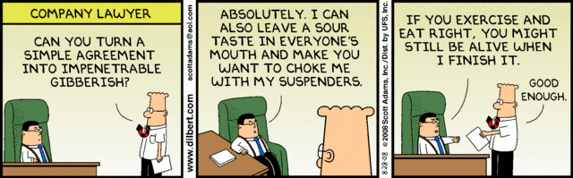

This will be a short post, and not technical like my usual ones, it is about many of the seemingly hundreds of failed IT projects out there, where companies have been let down by the big IT companies and consultants. Feel free to hit the back button at this point or go and check out the rest of the site, as from this point it’s just going to be me whinging 🙂
These big fails get all the attention of course, but I am sure that for each big fail, there are dozens of others simply swept under the rug. I can write this as I am almost at the end of my career, have seen many of these failures first hand, and I don’t have any particular agenda as I am no longer actively looking for major projects (though small gigs are still appreciated). I have also seen many successful projects, though mostly in terms of delivery rather than cost!
Tell me what you need, AND I will tell you how to get along without it. – Scott Adams
As a developer who specialises in writing systems for people who generally haven’t really got a clue what they want, I can usually tell the moment I walk in the room with them that they are either under or over-thinking the scope or complexity of their project. Yes, them not knowing exactly what they want makes life a bit harder for me, (though sometimes easier,) but what it doesn’t do and should never do, is give me the right to screw them over, or pretend I can do something when I cannot.
So lets get some truisms out of the way. Firstly, your BIG system is probably not really that big. Wow it stores a billion records, or wow it has to support five hundred users. Let me tell you something, there are very few database servers that don’t give you this out-of-the-box, and the two biggest of these (Postgres and MySQL) are completely licence-free. Furthermore it is a pretty shitty system-level programmer in 2025 who does not know the protocols to support multiple users.
Secondly your COMPLEX system is likely not even that complex. Small, or even lone developers like me have written many ERP, MRP or whatever the current buzz-word system it is. We are generally NOT re-inventing the wheel but re-using well proven techniques with some customisation and business logic added, so unless you are totally replacing everything, your system is unlikely to be this complex. With the advent of AI this is even more truer now than it was in the past.
But, you say, it also needs to be up 99.99% of the time, 24×7. Well welcome to modern IT, you can run hundreds of sessions easily on a low end local server, and you don’t need to go to AWS or whatever cloud-de-jour your consultant says it must be on. Remember, a cloud is just a server that you have no clue where it is physically located, and especially if you are a small player, you generally have no clue who to contact if there is a problem. Backups, fallback servers, docker containers, clusters are all well proven techniques that people like me and most small IT shops can install and configure with ease.
But people like me will never tender for your BIG project. For while I, and many other small businesses like me, have a perfect track record of delivering BIG systems for customers, (and there a a shed-load of developers far better than me); We are everything you seem to hate, so lets get them into the open shall we:
Firstly I am a one man shop, a lone developer. Yes I could easily obfuscate all this behind my web site; and on web sites I often see the third-person to talk about companies, where phrases like “we can do this” and “we specialise in that” hide the fact they have one or two developers behind layers of non-relevant management, sales and consultancy. I even do the same on my website, but I always make it very clear there is only me, and it will be only me who will help specify, write, install and support your system. Good luck having that person on speed-dial if you use a big company. If in doubt ask the question directly, but do not dismiss them because of it as even the biggest project probably relies on one or two key developers.
Secondly, I am not going to fill out your 50 page tender document, which is probably mostly technically wrong and full of corporate speak that has no relevance whatsoever to the project you want me to do. As an individual I do not have the time for this, nor can I work with your liability clauses, nor do I have a company statement on my carbon neutrality, anti-slavery, how I am inclusive, or anything like that; You should start out trusting track-proven vendors meet the criteria, unless they give you a genuine reason not too.
Then there is the technology that everyone seems so keen on specifying these days. This is despite the fact that it does nothing but exclude people who use much more mature technologies, and are likely to get the project done on time and budget. A lot of this is because your IT Manager or CTO heard about some new trend at their last “technical conference”, or they have paid an over-priced consultant to specify their new system, and to justify the extravagant cost they have hit all the buzz-words, or worse, have specified it so their own company or partner will be the only choice you will have to develop it. If the development tools and systems used are supported and you own all the code to the final system there is no real reason to reject something.
Lastly, it is highly likely that by the time a big company has written a line of code, I, or someone like me, will have a prototype ready. This is not hubris, it is just the way I operate, in order to get an alpha-stage product in front of a customer quickly, as I know they have likely gotten something wrong, and they will see it quicker with something in front of them.
Of course, I am not going to tender for replacing your big system, nor am I going to tender for our next government tax or social security system, but do not think for one minute it is because me, or another small business or developer like me cannot do it. Your system is NOT hard, it is you and your procurement procedures that are generally making it hard for small companies to help you, and it is you and your procurement systems and attitude that will likely make the project fail, be delayed or go over-budget.
None of this is to say do not do your due diligence, just make sure you due diligence does not exclude us small players.
